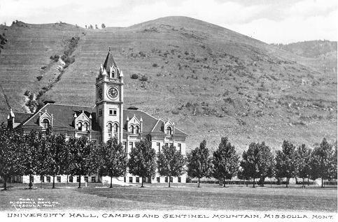

| |
| |
| NEWS |
| |
| ACADEMICS |
| |
| RESEARCH |
| |
| STUDENT |
| |
| |
| |
| |
|
University of Montana

The University of Montana (often simply referred to as the U; U of M, and UM) is a public research university
located in Missoula, Montana, in the United States. Founded in 1893, the university is the flagship campus of the
four-campus University of Montana System and is its largest institution. The main campus is located at the foot of
Mount Sentinel, the mountain bearing Missoula's most recognizable landmark, a large hillside letter "M." It is a
major source of research, continuing education, economic development and fine arts, as well as a driving force in
strengthening Montana's ties with countries throughout the world.
The university calls itself a "city within a city," and contains its own restaurants, medical facilities, banking,
postal services, police department, and ZIP code. The University of Montana ranks 17th in the nation and fifth among
public universities in producing Rhodes Scholars, with a total of 28 such scholars. The University of Montana has 11
Truman Scholars, 14 Goldwater Scholars and 31 Udall Scholars to its name.
The University of Montana's Maureen and Mike Mansfield Library houses the earliest authorized edition of the Lewis
and Clark journals. Rolling Stone labelled the university the "most scenic campus in America" and Outside magazine
called it "among the top 10 colleges nationally for combining academic quality and outdoor recreation".
- History
- Campus
- Organization and administration
- Administration
- Funding
- Colleges, schools, and centers
- Campus media
- Student life
- Transportation
- Athletics
- Presidents of the school
- Notable people
- References
- External links
History
An act of Congress of February 18, 1881 dedicated 72 sections (46,000 acres or 19,000 hectares) in Montana Territory
for the creation of the University.
Montana was admitted to the Union on November 8, 1889, and the Montana Legislature soon began to consider where the
state's permanent capital and state university would be located. To be sure that the new state university would be
located in Missoula, the city's leaders made an agreement with the standing capital of Helena that Missoula would
stay out of the bidding for the new capital and would support Helena over its leading competitor, Anaconda. The
cities' bids were supported by the rival Copper Kings, William A. Clark Marcus Daly, respectively.
Missoula won the legislative vote for the new university at the Third Montana Legislative Assembly in February 1893.
The University was formally opened in 1895. While plans for a university campus were progressing, classes were
temporarily held at nearby Willard School. The South Missoula Land Company, owned by A.B. Hammond, Richard Eddy and
Marcus Daly, joined with the Higgins family in donating land for the new campus. In June 1898 the cornerstone for
A.J. Gibson designed University Hall was laid and Missoula became "the University City."
|